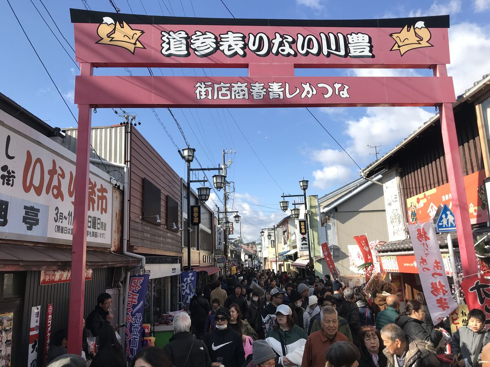

お知らせ
本殿創建100年に向け、72年ぶりの御開帳開催
所在地
愛知県豊川市豊川西町１
紹介
日本三大稲荷の一つに数えられる、豊川が誇る名所。
豊川稲荷は、正式には円福山妙厳寺という曹洞宗の寺院です。狐にまたがる稲荷神「吒枳尼真天（だきにしんてん）」を祀り、 商売繁盛・家内安全のご利益を求めて全国から参拝者が訪れます。地元・豊川では初詣や七五三の際に多くの人が集う、 まさに街の象徴的な存在です。正月には全国から約145万人の参拝者が訪れ、境内は大変賑わいます。
見どころ
霊狐塚（れいこづか）
境内奥に広がる、千体以上のきつね像が並ぶ神秘的な場所。大小さまざまな石像がびっしりと並ぶ光景は圧巻で、 豊川稲荷を象徴する撮影スポットにもなっています。
門前町のグルメ
表参道には稲荷寿司の名店や食べ歩きグルメの店が並びます。参拝の後は、 名物のいなり寿司片手に門前町をぶらぶら散策するのがおすすめです。

アクセス
豊川稲荷へは、JR飯田線「JR豊川駅」・名鉄豊川線の「豊川稲荷駅」から徒歩約5分でアクセスできます。 名古屋駅からは電車で約1時間、豊橋駅からは約20分で到着します。